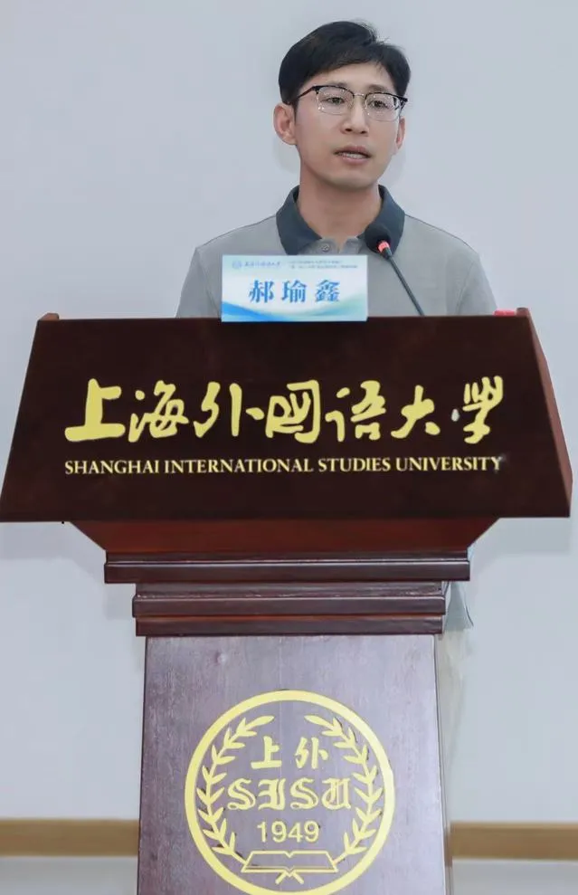

COLLABORATOR
Yuxin Hao
Professor & Doctoral Supervisor
Shanghai International Studies University
Second language acquisition · Quantitative linguistics · Chinese language education
Faculty profile ↗
COLLABORATOR
Professor & Doctoral Supervisor
Shanghai International Studies University
Second language acquisition · Quantitative linguistics · Chinese language education
Faculty profile ↗COLLABORATOR
Natural language processing
Multimodal language understanding
Large language models · Multilingual semantics · AI for language learning
Personal homepage ↗